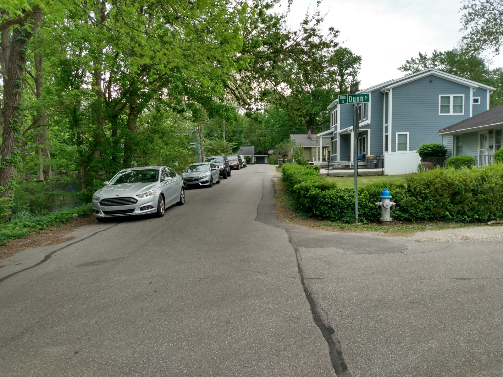

Letter excluded for confidentiality
As submitted, this letter includes personal contact information — a home address, personal email, and/or phone number. The City currently publishes letters as filed; this page intentionally does not reproduce that content here.
Dear Board of Zoning Appeals,
My name is John Doe. I live near 412 E. Wylie Street. I am writing to share my views on the conditional use and variance requests under case ZR2026-05-0022.
[The substance of a commenter's letter would appear here in full — their stated position and reasoning, exactly as submitted.]
Sincerely,
John Doe

This is what a properly handled letter would look like on this site: the commenter's name kept, contact details left out, and any attached photo included with a real description for anyone using a screen reader.